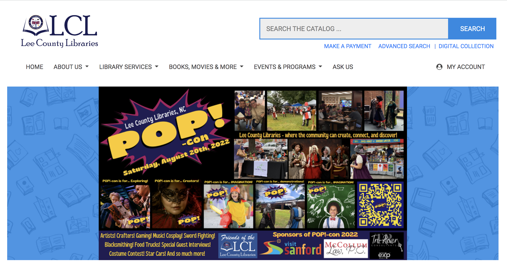

LIS 636 Evaluation 2
The Lee County Libraries Website covers two branches of the library system in the cities of Sanford and Broadway. The main branch is in Sanford, NC. The site includes components which appear to have the main function of connecting the user to library services in a simple and straightforward manner.
The components of the site include large box showcasing events (see website image below) and other items that the library wants to highlight for users. Above the large box there is a main menu consisting of:
Under this box there is a grid layout with 3x2 boxes with pictures and headings for: Social Media, Monthly Newsletter, Wowbrary!, Featured Collection, Featured Service, and Get a Library Card. Following this there is a section for featured library services which includes access to digital collections, making a payment, getting a temporary library card online, and calendar events. The bottom portion of the homepage is a bar with links to the facebook page for the library. The footer contains contact information for the library and other useful links.
The Lee County Library website was designed to facilitate several tasks. The main feature of the site appears to be in highlighting events and services as it is center stage on the homepage. The next goal of the site seems to be focused on creating access to the events and to the library’s social media. Accessing digital collections is another important function of the site and is linked several times on the homepage. Making payment for donations or library fees is another important function included in the design of the site.
The components of the site make it easy for users to complete the tasks that it was designed to facilitate. The content is structured in a way that makes sense. The navigation is easy to follow. If you are looking to see what upcoming events that the library has they are easily visible. Access to the library is made easy by providing a way to receive a temporary library card which enables the user to have instant access to digital collections with Libby via E-Inc. Connections to the library’s social media, facebook, instagram and youtube are easy to find. The content has a flow that makes sense and isn’t difficult to follow.
Lee County Libraries Website does a solid job of keeping the content functional and in alignment with the main goals of the site. It is a simple site design and is easy to navigate. The site provides a way for the user to have access to all of the important functions of the library and does so in a way that is not confusing or difficult.